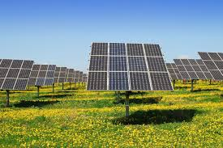
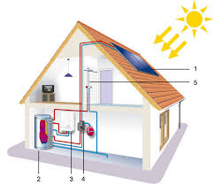
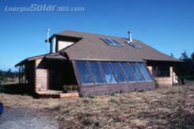

Blog de la Energia Solar
Energia Solar
Beneficios de la energia Solar
Retos y limitaciones
El futuro de la energia Solar
¿Que Es La Energia Solar
La energía solar es la energía obtenida de la radiación del sol. A través de tecnologías específicas, esta radiación se convierte en electricidad o calor útil para el consumo humano.
Existen tres principales formas de aprovecharla:
Energía solar fotovoltaica
-Transforma la luz solar en electricidad mediante celdas fotovoltaicas que se encuentran en los paneles solares.
-Es la más común en casas, edificios y sistemas eléctricos rurales.
-Puede usarse en pequeñas aplicaciones (como calculadoras o lámparas solares) hasta en grandes plantas solares
que generan electricidad para miles de personas.

Energía solar térmica
-Utiliza el calor del sol para calentar agua o fluidos.
-Se emplea en viviendas para duchas solares, en piscinas, hoteles o en la industria para producir vapor que mueve turbinas.

Energía solar pasiva
-No requiere sistemas tecnológicos complejos, sino un diseño arquitectónico inteligente que aprovecha la luz y el calor del sol.
-Ejemplo: casas con ventanales orientados al este y al sur que permiten recibir más luz natural y reducir el uso de electricidad.

Katherine Natalia Serrano Garcia
Cuarto Bachillerato B
Clave:25